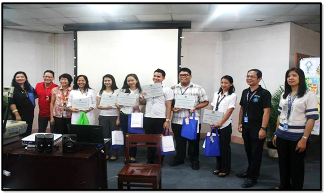
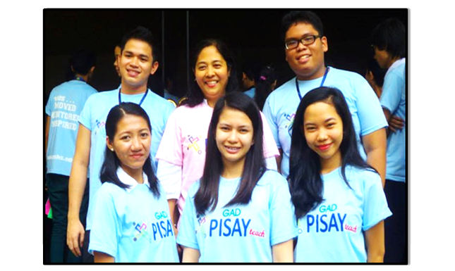

Announcements
This website template has been designed by Free Website Templates for you, for free. You can replace all this text with your own text.
You can remove any link to our website from this website template, you're free to use this website template without linking back to us.
UMak Education Students Shine at GAD PisayTeach
Submitted by admin on Fri, 01/24/2014 - 14:52
Education students bagged seven awards during the weeklong training and coaching event dubbed Gender and Development (GAD) PisayTeach at the Philippine Science High School (PSHS) on November 11 to 15, 2013. UMak received the most number of awards from the tough GAD PisayTeach Committee.

Four of the UMak five-man delegation received recognition as they actively joined in the various activities participated in by seven teacher-training higher institutions that included Central Colleges of the Philippines, City University of Pasay, Bulacan State University, Pamantasan ng Lungsod ng Maynila, Pamantasan ng Lungsod ng Pasig, Pamantasan ng Lungsod ng Valenzuela, and University of Makati.
Beaming happily for the camera are the PisayTeach UMak delegates. At the front row, from left to right are Larnie N. Tacud, Erica Mae S. Matoza, and Jillian May R. Peralta. At the back row, from left to right are Niño D. Mapa, Dr. Amelia P. Paje, and Dan Marvic R. Rubica
